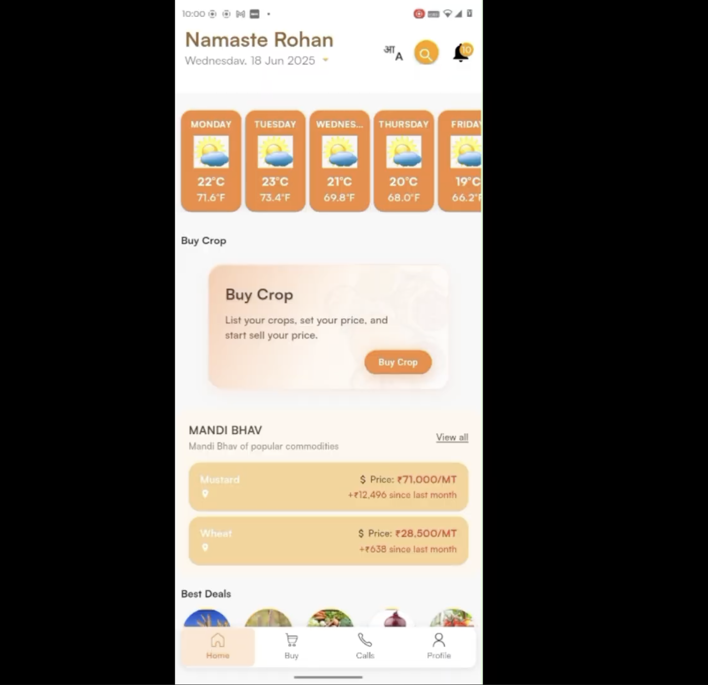

Projects
The code is not the point by itself. The useful part is the workflow, the model, and the decisions underneath.
 Synccode
Developer productivity / collaboration
Code collaboration product with emphasis on editor experience, session state, and developer workflow.
Synccode
Developer productivity / collaboration
Code collaboration product with emphasis on editor experience, session state, and developer workflow.
 CMS Pro
Agentic customer support / systems design
Multi-provider AI support platform with grounded retrieval, agent routing, streaming responses, and production reliability controls.
CMS Pro
Agentic customer support / systems design
Multi-provider AI support platform with grounded retrieval, agent routing, streaming responses, and production reliability controls.

AgrimB Marketplace backend / product workflow Agricultural marketplace backend with seller workflows, listings, product data, and API design.